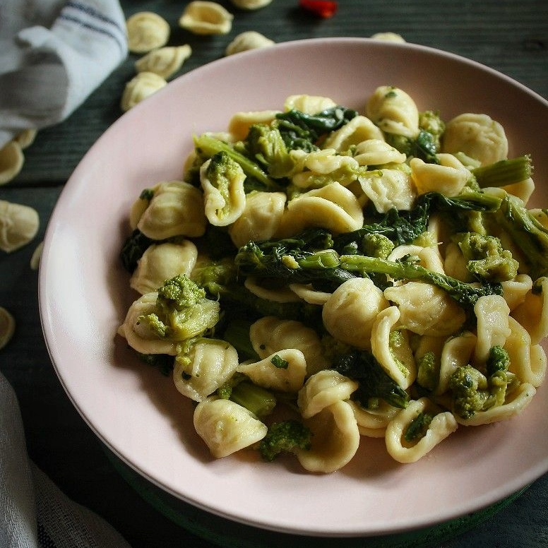

Ricette Salate
In questa sezione troverai tutte le ricette salate tipiche delle regioni italiane, dai piatti di pasta alle pizze, ideali per pranzi e cene gustose.
Campania -La Pizza Napoletana-
Ingredienti:
-Farina 00 W 280 800 g
-Acqua 500 g
-Olio extravergine d'oliva 25 g
-Sale fino 25 g
-Zucchero 10 g
-Lievito di birra fresco 1 g
Per la farcitura:
-Pomodori pelati tipo San Marzano 400 g
-Fiordilatte 400 g
-Parmigiano Reggiano DOP da grattugiare q.b.
-Basilico spezzettato a mano q.b.
-Olio extravergine d'oliva q.b.
-Sale fino 4 g
Preparazione:
Per preparare la pizza napoletana come prima cosa munitevi di una madia. Versate l'acqua all'interno, aggiungete il sale e lo zucchero. Mescolate per scioglierli completamente, poi versate più della metà della farina. Sistemate il lievito in una mano e infarinate l'altra.
Sbriciolate il lievito sul monticello di farina frizionandolo tra i palmi delle mani. Iniziate a mescolare con una mano in modo che la farina assorba gradualmente tutta l'acqua.
Aggiungete ancora una parte di farina e impastate sempre con una mano. Proseguite in questo modo sino a terminare la farina, o comunque in base alla consistenza del composto. Versate tutto l’olio e continuate ad impastare sempre con una mano fino al completo assorbimento.
Trasferite l'impasto sul piano di lavoro e impastate con due mani per circa 20-25 minuti. All’occorrenza si può aggiungere solo uno spolvero di farina sul banco. L'impasto dovrà risultare liscio e non appiccicoso. Formate una palla e copritela con la madia. Lasciate riposare per 15 minuti.
Trascorso il tempo di riposo l'impasto si sarà rilassato, quindi impastatelo ancora leggermente. Pirlatelo e sistematelo nella madia. Coprite con l'apposito coperchio e lasciate riposare per 40 minuti.
Trascorso questo tempo riprendete l'impasto e procedete allo staglio. Per realizzare lo staglio professionale dividete l'impasto in due parti e prendetene una, poi formate un filone e iniziate ad arrotondare la parte iniziale con la mano sinistra.
Ora stringete il filone tra pollice e indice in modo da formare una pallina e spezzarla allo stesso tempo, poi arrotondatela sul piano di lavoro con l'altra mano. Il metodo più facile per stagliare l'impasto a casa invece è dividere l'impasto in pezzi di peso uguale: con dei panetti da circa 250-260 g l'uno otterrete delle pizze del diametro di 28-32 cm.
Roteate ogni porzione di impasto su un piano per sigillare bene la base e ottenere una forma sferica. Trasferite le palline nella madia distanziandole bene. Coprite con l'apposito coperchio e lasciateli lievitare ad una temperatura di 18°-24° per 8-12 ore.
Versate i pelati in una ciotola e schiacciateli a mano. Condite con il sale, un filo d'olio e il basilico spezzettato a mano. Passate ora alla mozzarella fiordilatte. Tagliatela a metà e poi a fette. In ultimo ricavate dei bastoncini non troppo spessi, ma nemmeno troppo sottili.
Quando i panielli saranno quasi arrivati a lievitazione iniziate ad occuparvi del forno. Sistemate all'interno una pietra refrattaria e scaldatelo alla massima potenza 30-40 minuti prima o anche 1 ora se il vostro forno non è molto potente. Passate rapidamente il primo paniello nella farina, da entrambi i lati. Per stendere il paniello dovete congiungere le mani sovrapponendo gli indici e i pollici in modo da creare una sorta di triangolo. Fate una leggera pressione partendo dal centro e andando verso i bordi, spingendo l'impasto dall'alto in basso così dar mandare l’aria verso il bordo e creare il cornicione. Premete l'impasto in questo modo per 3 volte.
Ora sollevate il paniello delicatamente e capovolgetelo. Ripetete la stessa operazione, premendo sempre con le mani per 3 volte dal centro verso il bordo, poi capovolgetelo ancora e ripetete la stessa operazione.
Cercate di non manipolare troppo l'impasto e di non allargarlo bruscamente tirando uno dei lembi, altrimenti potrebbe restringersi. Ora pizzicate i bordi opposti con indice e medio, come se fossero delle forbici, e spostate delicatamente l'impasto sul banco senza tirarlo. Infine mettete una mano al centro per tenere fermo l'impasto mentre tirate delicatamente uno dei bordi pinzandolo con indice e medio, sempre come se fossero delle forbici. Tirate delicatamente per allargarlo, poi ribaltatelo sull'altra mano e sbattetelo nuovamente sul piano, ruotandolo leggermente. Non dovrete stendere completamente la pasta, basterà stenderla per metà: in questo modo non rischierete di romperla una volta messo il condimento. Cospargete bene con i pomodori pelati distribuendoli con un movimento a spirale. Lasciate libero il bordo, ma assicuratevi di coprire bene la parte centrale.
Aggiungete poi la mozzarella fiordilatte, senza esagerare con le quantità, e il Parmigiano grattugiato. Completate con del basilico fresco spezzettato con le mani e un filo d'olio.
Sollevate la pizza e trasferitela dal banco verso la pala, poi allargatela delicatamente con le mani. Trasferite in forno alla massima temperatura posizionandola direttamente sulla pietra refrattaria precedentemente riscaldata: cuocete per 5-7 minuti. Sfornate e servite subito la vostra pizza napoletana!

Puglia -Le Orecchiette con cime di rapa-
Ingredienti:
-Cime di rapa 1 kg
-Pangrattato 50 g
-Sale fino q.b.
-Aglio 1 spicchio
-Acciughe sott'olio 3 filetti
-Olio extravergine d'oliva 30 g
Per 300 g di orecchiette fresche:
-Acqua tiepida 100 g
-Semola di grano duro rimacinata 200 g
-Sale fino q.b.
Preparazione:
Per preparare le orecchiette, per prima cosa versate la farina di semola di grano duro rimacinata sulla spianatoia, formate una fontana e aggiungete un pizzico di sale sulla farina. Al centro versate l'acqua a temperatura ambiente e iniziate a lavorare con le dita per incorporare la farina e lavorate poi impastando fino ad ottenere un impasto omogeneo ed elastico. Ci vorranno una decina di minuti di lavorazione. Date una forma rotonda all'impasto e copritelo con un canovaccio: dovrà riposare a temperatura ambiente per circa 15 minuti.
Passato il tempo di riposo, prelevate un pezzo di impasto, mentre il resto potete lasciarlo coperto dal canovaccio. Lavorate il pezzo prelevate un filoncino dello spessore di circa 1 cm (7-8). Aiutandovi con il tagliapasta tagliate dei pezzettini di circa 1 cm.
Con l'aiuto di un coltello a lama liscia, formate delle conchigliette trascinando ciascun pezzetto verso di voi sulla spianatoia. Rigirate poi la conchiglia su se stessa. Proseguite fino a terminare tutto l'impasto e avrete realizzato le vostre orecchiette pugliesi.
Per le cime di rapa: procedete a pulirle eliminando le foglie esterne e prelevando con un coltellino (o con le mani) solo le foglie interne e il fiore. Una volta pronte sciacquatele, poi scolatele, asciugatele bene e tenete da parte. Intanto mettete sul fuoco una pentola con abbondante acqua, salata a piacere, che servirà per lessare successivamente le cime di rapa.
In una padella ampia versate metà della dose di olio e e aggiungete il pagrattato, mescolate con una marisa e lasciatelo abbrustolire a fuoco medio, fino a quando non sarà ben dorato, quindi tenetelo da parte. Non appena l'acqua avrà raggiunto il bollore lessate le cime di rapa pulite in precedenza: dovranno cuocere per circa 5 minuti.
Nel frattempo potete dedicarvi al soffritto: in una padella versate l'olio rimasto, uno spicchio d'aglio schiacciato in camicia e i filetti di acciughe scolati dall'olio di conservazione. Mescolate con una paletta di legno per sciogliere le acciughe in padella; ci vorranno pochissimi minuti per far insaporire il soffritto e quando sarà pronto, potete togliere l'aglio quindi spegnete il fuoco.
Passati i 5 minuti di cottura delle cime, aggiungete nella stessa pentola anche le orecchiette e cuocete il tutto per altri 5 minuti circa. Mescolate delicatamente, quindi scolate le orecchiette e le cime di rapa direttamente nella padella con il soffritto.
Saltate brevemente e aggiustate con un pizzico di sale; una volta pronte, spegnete il fuoco e impiattate le vostre orecchiette alle cime di rapa, aggiungendo all'ultimo un filo d'olio a crudo e il pangrattato tostato.